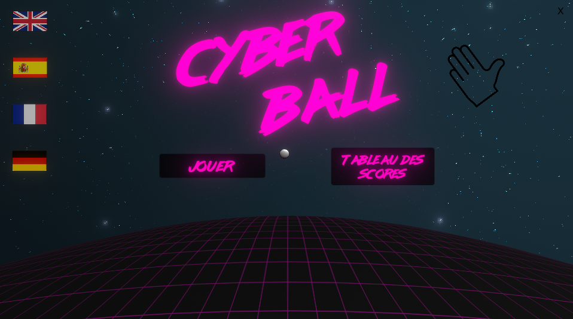
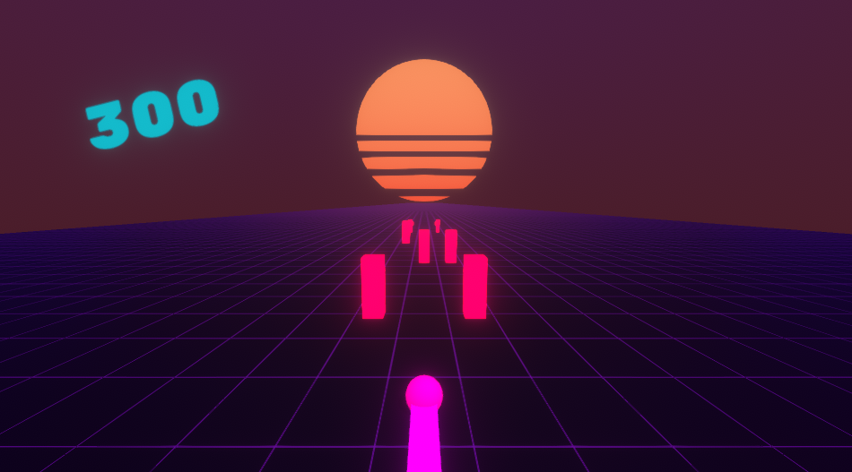

Cyber Ball a été mon projet de 3ème année. C’est un jeu de type infinite runner, aux environnements « synthwave ». Le jeu a été pensé pour être joué avec la Kinect 2.0 sur une borne d’arcade. En effet, mon projet assigné en début d’année a été de construire une borne d’arcade, et y implémenter un jeu « test ». Cette borne a pour ambition d’être exposée lors des évènements promouvant l’école, comme les conventions en Alsace (Geek Unchained, Start-To-Play, etc…)
Le joueur se déplace entre les obstacles et gagne des points lorsqu'il les franchit. Si le joueur a battu un score dans le leaderboard, son nom peut être inséré et il y figurera. Cyber Ball avait pour but d’être joué par différentes personnes lors des conventions, donc un accent sur l’accessibilité fut implémenté. Le jeu a donc été localisé en 4 langues, français, anglais, espagnol et allemand et peut être jouable par n’importe qui. (Situation de handicap)
Lien vers une vidéo de démonstration
| Mes contributions |
|
|  | |
 |
Contactez moi à l'adresse mail suivante : cdrcmag@outlook.fr